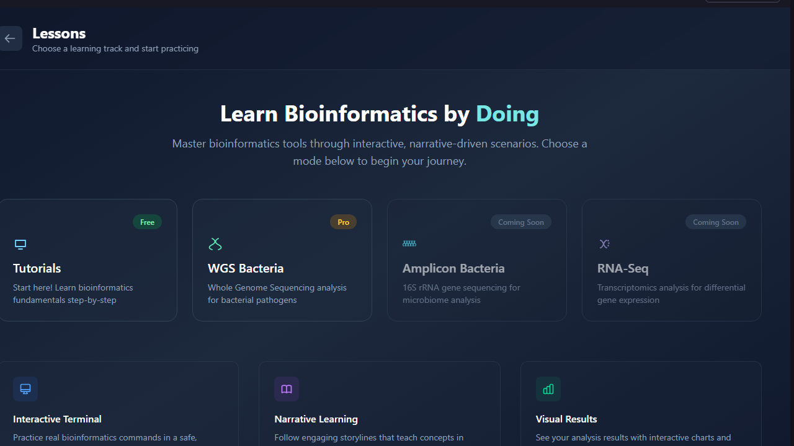
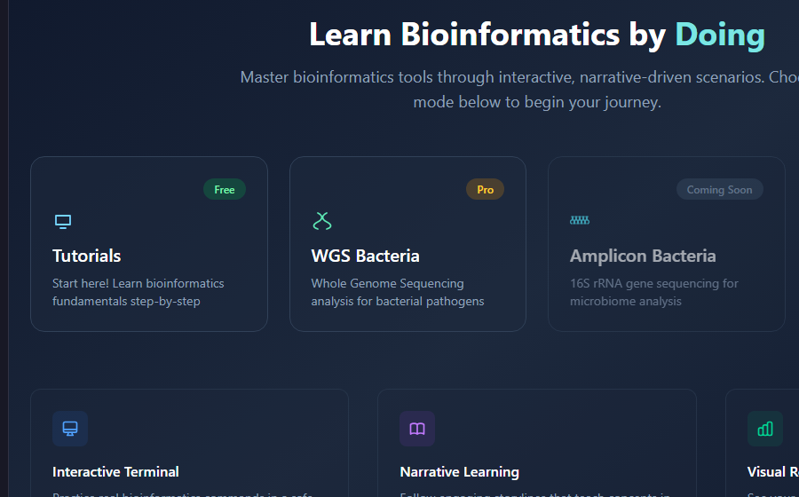

Each lesson starts with a research problem instead of a static list of commands.
KodaGeno
Practical bioinformatics training for bacterial WGS, amplicon, and RNA-seq analysis.
KodaGeno teaches learners how to choose tools, run analysis steps, and interpret results in context. It supports academic teaching, institutional cohorts, and guided practice before teams move onto live research data.
Live lesson library
Desktop website view

WGS scenarios
Amplicon scenarios
RNA-seq scenarios
Learners are asked what to do next, not just shown the answer.
The platform explains why an output matters and how it changes the next analysis step.
Departments can deploy cohorts while individual learners can start directly on the live product.
Sample scenario
How one KodaGeno lesson works.
Here is a concrete example of how a learner moves through one lesson.
Bacterial WGS quality control and trimming.

You receive a FASTQ file from a bacterial WGS run. FastQC reports a mean quality score of Q28 with a quality drop after position 140. KodaGeno asks the learner what to do next before assembly.
Proceed directly to assembly
Skip trimming and accept the low-quality tail.
Skip trimming and accept the low-quality tail.
Trim with a conservative quality profile
Clean the tail while preserving enough read length for downstream assembly.
Clean the tail while preserving enough read length for downstream assembly.
Trim aggressively
Risk losing too much depth before the next step.
Risk losing too much depth before the next step.
Guided feedback
KodaGeno explains why the conservative trimming profile fits the read length and coverage depth, then shows the updated FastQC output before the lesson moves on to assembly.
Feature strip
Three product traits that matter during evaluation.
These are the product behaviors departments usually review first when they compare KodaGeno with static teaching material.
Interactive terminal
Practice commands and parameter choices in a guided environment instead of reading static screenshots.
Narrative learning
Research scenarios explain why a step matters, not just which button or command to use.
Guided practice modules
Short lessons support semester delivery, bootcamps, or direct learner practice without becoming a passive video course.
Deploy KodaGeno as a cohort-based training program.
Universities, academies, and training organizations can use KodaGeno for guided bioinformatics practice with cohort setup, instructor access, progress tracking, launch support, and recurring reports.
Cohort setup
Instructor access
Reporting cycle
- Use instructor-facing delivery for semester courses, bootcamps, or internal training programs.
- Track learner progress by module, lesson completion, and scenario step.
- Plan seat setup, launch timing, progress reviews, and renewal discussions as part of institutional rollout.
Start practice directly on the live KodaGeno product.
Individual learners can open lessons directly, work through guided scenarios, and build confidence before using live research data in a lab or training setting.
Start Practice
Self-guided access
Lesson progression
Institution proof
What institutions review beyond the learner screen.
The learner interface is only half of the buying decision. Institutional buyers also need to see seat setup, progress review, and what reporting looks like in practice.
This covers the operational handoff institutions review before a cohort goes live.
Typical reporting includes cohort name, active learners, module progress, last activity date, and the next planned review point.
Typical reporting cadence covers launch confirmation, a mid-term progress update, and an end-of-term summary.
Module list
Representative curriculum areas for KodaGeno review.
Institutional buyers usually want to know what the lesson library actually covers before they discuss deployment.
Quality Control
FastQC, MultiQC, and how to read per-base quality and adapter signals.
Adapter Trimming
Trimmomatic and Fastp, including when to trim aggressively and when not to.
Genome Assembly
SPAdes, assembly choices, and reading assembly quality outputs.
Assembly QA
QUAST metrics, contig review, and how to judge whether an assembly is usable.
Annotation
Annotation outputs, GFF interpretation, and how annotation changes downstream questions.
16S Amplicon Analysis
QIIME-style microbiome workflows, feature tables, and diversity interpretation for 16S teaching modules.
RNA-seq
Alignment, counting, and differential-expression interpretation for teaching contexts.
Phylogenetics
Alignment, tree building, and how to read a tree back into the biological question.
Variant Workflows
Read mapping, variant review, and calling decisions in bacterial datasets.
Reporting
How to turn analysis outputs into a clean scientific summary or training submission.
Learner personas
Who KodaGeno is built for.
These are the learner types KodaGeno is designed to support in direct access and institutional delivery.
Understands the biology but needs a first safe step into command-line analysis.
KodaGeno gives this learner guided choices, structured explanations, and a clearer path into bioinformatics work.
Needs structured practice before touching a supervisor's real data.
KodaGeno provides lesson-sized modules that make early mistakes lower-risk and easier to correct.
Needs a curriculum with exercises, scenarios, and assessable outputs for a cohort.
KodaGeno supports instructor-led delivery with modules that can fit semester teaching or short training programs.
Open the lesson library, the interface guide, or the local program summary.
Use the live lesson library for the learner view, then use the local materials for institution planning and deployment review.
FAQ
Questions buyers usually ask before they open a lesson or start a deployment discussion.
Can students access KodaGeno without institutional IT setup?
Yes. Individual learners can start from the live lesson library, while institutions can review wider cohort delivery separately.
Is the lesson library fixed or can institutions review specific modules first?
Institutions can review specific modules first during evaluation. The public lesson library follows the published structure, while module scope and sequencing are discussed during deployment planning.
What does instructor oversight mean in practice?
Institution discussions cover cohort setup, learner invitation, lesson progression, and review of completion status during program delivery.
Do learners need prior command-line experience?
No. KodaGeno is designed for guided practice, so lessons focus on tool choice, decision-making, and output interpretation rather than assuming prior CLI confidence.
How long does a typical lesson take?
Most lessons are designed for roughly 20 to 45 minutes, depending on the scenario depth and how much discussion or instructor review is added.
Can KodaGeno support semester courses and short training programs?
Yes. The platform supports semester cohorts, bootcamps, and focused training blocks that need guided analysis practice without building a curriculum from zero.
Contact
Need to review KodaGeno for institutional rollout or direct learner access?
Live lessons show the learner experience first. Contact handles seats, cohort delivery, and institutional setup discussions.